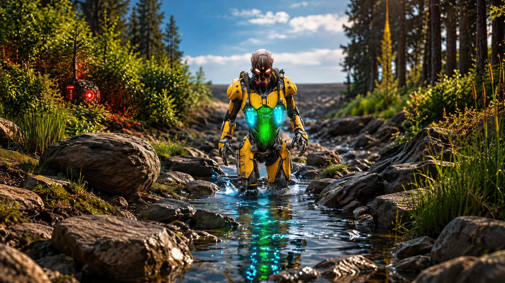
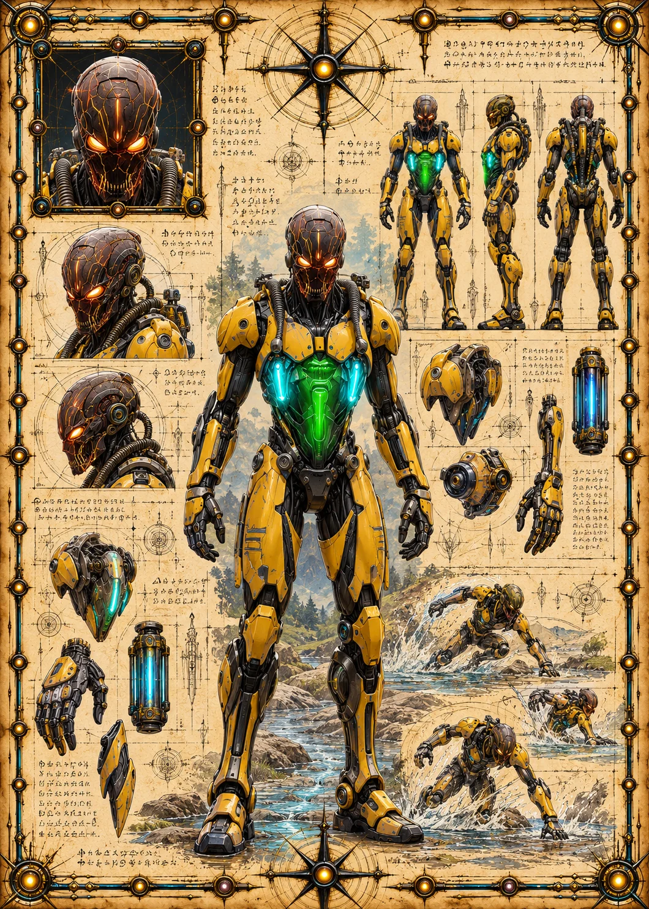

Field Observation
A red luminous orb hangs among the trees left of Jyntrak.
 ©
©
GENEZYS ARCHIVE · EARTH 1 · Synthbot
Sorrow Imbiber
Identity & combat record
Archive node 01 / 05
Archive record
Jyntrak feeds on despair, and every raid on Earth 1 leaves plenty behind. The Energy Spike silences an enemy's special and pierces them in one violent surge. Some Corsairs swear that Jyntrak's pilot no longer sleeps at all.
Combat signature
Drains consciousness in violent surge: Freezes 1 enemy's special for 1 round and deals 150 pierce damage.
Genezys 06:08 ™&©2026LEGIONS
Recovered visual record
Archive node 02 / 05

Full frame available // rotate device to landscape
Technical archive
Archive node 03 / 05

Classified field intelligence
Archive node 04 / 05
FIELD REPORT // ARTIFACT SIGHTING
Field Observation
A red luminous orb hangs among the trees left of Jyntrak.
Environment
Object Analysis
Key Findings
Motion archive
Archive node 05 / 05
Motion record not yet recovered